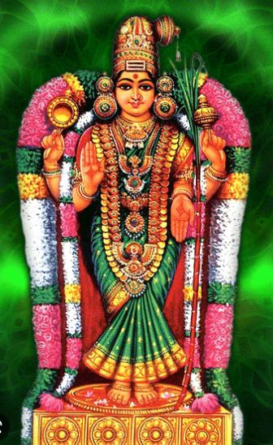

अखिलाण्डेश्वरी पुष्प मालास्तोत्रम्
Akhilaandeshwari Pushpa Maalastotram
(Akhilandeshwari Akshara Malika)
Started 4-Feb-2023

अध्वातीतपदे अलङ्कृत शिवे अर्थान्तरर्थे परे
अत्यर्थे अमलाशये अतिदये अर्धेन्दुभूषोज्ज्वले ।
अध्यक्षे अमराङ्ग नापरिवृते अध्यात्म विद्यामये
अव्यक्ते अचलाधि राज तनये वन्देऽखिलाण्डेश्वरि ॥ १॥
आद्ये आगम सम्प्रदाय निपुणे आचार्य वर्यार्चिते
आधारादि सरोज पीठ निलये आलोल नीलालके ।
आताम्राधर चारु मन्द हसिते आपीन वक्षोरुहे
आब्रह्माच्युत शङ्क रार्चित पदे वन्देऽखिलाण्डेश्वरि ॥ २॥
इच्छा ज्ञान समस्त शक्ति सहिते इन्दीवर श्यामले
इन्द्रोपेन्द्र वरप्रदे इभवना धीशे इनाराधिते ।
इज्ये इन्दुनि भानने इभनुते इष्टार्थ सिद्धिप्रदे
इन्द्राणीन मिते इभान नसुते वन्देऽखिलाण्डेश्वरि ॥ ३॥
ईशे ईशविरिञ्चि शौरि वरदे ईड्यालि ईशात्मिके
ईर्ष्यादूषित चित्त दूरचरणे ईशप्रिये ईश्वरि ।
ईड़ये ईश्वर वाम भाग निलये ईङ्कार क्लृप्तोदये
ईशित्वादि महाविभूति निलये वन्देऽखिलाण्डेश्वरि ॥ ४॥
उद्यद्भानु सहस्र कोटि किरणे उर्वी धरेन्द्रात्मजे
उत्फुल्लाम्बुज लोचने उभयका वेर्यन्त रालाश्रये ।
उद्यच्चन्द्रनि भानने उरुतरे उच्चासने उज्ज्वले
उद्दामद्युति पुञ्ज मञ्जु लतरे वन्देऽखिलाण्डेश्वरि ॥ ५॥
ऊहापोह विवेक बाह्य निलये ऊनाति रिक्तोज्ज्वले
ऊर्जस्वन्मणि मेखलावि लसिते ऊरीकृतार्थ प्रिये ।
ऊर्ध्वा धोद्भव योग मूलनिलये ऊष्मा पहा रोज्ज्वले
ऊधः क्षीर सुधा धृत त्रिभुवने वन्देऽखिलाण्डेश्वरि ॥ ६॥
ऋग्वेदादि निषेविते ऋजुनते ऋद्धानु कम्पावहे ।
ऋद्धा मोद मुखेप्सिते ऋतुनुते ऋक्षौघ संसेविते ।
ऋक्षा धीश कलान्विते ऋणतमो भास्वत्पदाम्भो रुहे
ऋद्ध्या पूरित विष्टपत्र यनुते वन्देऽखिलाण्डेश्वरि ॥ ७॥
रूपा रूप सदाशिवान्त रगते रूपे सदा रूपिणि
रूपातीत परापरार्थ निलये रूढप्र रूढात्मिके ।
नॄणां जन्म जरापहार निलये नृत्राण कल्पद्रुमे
नॄणां पाप विमोचनाद्य फलदे वन्देऽखिलाण्डेश्वरि ॥ ८॥
Ended 4-Feb-2023
क्लृप्ताशेष जगन्महेश निलये क्लृप्ताङ्ग रागोज्ज्वले
क्लृप्ता क्लृप्त विशङ्क्य मानविलसn न्मध्या वलीरञ्जिते ।
लिङ्गाराधन तत्परे लिकुचरा जत्पाणि पङ्केरुहे
क्लृप्ता कल्प मनोहराङ्ग लतिके वन्देऽखिलाण्डेश्वरि ॥ ९॥
लूताधीशगजेन्द्रपूजितपदे लूनाहितेशान्विते।
क्लीङ्काराङ्कित बिन्दुपीठनिलये क्लीङ्काररूपेडिते ।
लूतातन्तुजडीकृतेशनिलये लूनाहिवल्लीदले
लूताक्ष्मापतिमुक्तिदातृमहिले वन्देऽखिलाण्डेश्वरि ॥ १०॥
एके एकमहाम्बुराशिनिलये एकान्तक्लृप्तोदये
एकानेकतया विभक्तभुवने एकातपत्रोज्ज्वले ।
एणीचारुविलोललोचनयुगे एकावलीभूषणे
एतत्तत्त्वमयाणिमादिवरदे वन्देऽखिलाण्डेश्वरि ॥ ११॥
ऐङ्कारासनमध्यपीठनिलये ऐन्द्रादिलोकप्रदे
ऐरावत्युपमानदेहलतिके ऐन्द्रादिशक्तीडिते ।
ऐङ्काराक्षरवेदवेद्यविभवे ऐश्वर्यदानेक्षणे
ऐमैमित्यनुसन्दधानभुवने वन्देऽखिलाण्डेश्वरि ॥ १२॥
ओमित्येकपदावलीडितपदे ओजोविशेषान्विते
ओष्ठाधावितबिम्बविद्रुमलते ओघत्रयाराधिते ।
ओघैरप्सरसां सदापरिवृते ओताखिलार्थाधिपे
ओजोराजितवाग्विभूतिविनुते वन्देऽखिलाण्डेश्वरि ॥ १३॥
औशीरादिसुगन्धिशोभनकचे औत्पत्तिजालप्रिये
औदासीन्यविभिन्नदैत्यविभवे औपाधिकोपान्विते ।
औदार्याकरपादपङ्कजयुगे औपम्यहीनानने
औमाकान्तपदप्रदार्तिहपदे वन्देऽखिलाण्डेश्वरि ॥ १४॥
अम्भोजासनमुख्यसेवितपदे अम्भोधरश्यामले
अङ्गाकल्पितरत्नभूषणशते अण्डौघसंसेविते ।
अम्ब्वाकाशतया विभक्तभुवने अम्भोरुहाङ्घ्रिद्वये
अह्नायान्तकसूदनप्रियतमे वन्देऽखिलाण्डेश्वरि ॥ १५॥
अस्ताघे अवनम्रदेवनिवहे अस्तोकभाग्योदये
अर्धाधिक्यमनोहरे अचलजे अष्टाक्षरैरर्चिते ।
अर्घातीतमनोज्ञभूषणशते अक्षीणसौभाग्यदे
अर्काम्भोरुहवैरिवह्निनयने वन्देऽखिलाण्डेश्वरि ॥ १६॥
कावेरीपुलिनालये कमलजे कामारिवामालये
कारुण्यामृतलोचने कविनुते कन्दर्पकान्तिप्रदे ।
कल्याणि क्षितिलोककल्पलतिके कारुण्यवारान्निधे
कालाम्भोधरकम्रकुण्डलधरे वन्देऽखिलाण्डेश्वरि ॥ १७॥
खर्वाटे खगकेतनानुजवरे खट्वाङ्गपाणिस्तुते
खर्वाखर्वविवर्जिते खगमयूखाराधिते खड्गिनि ।
खद्योतेशवरप्रदे खगनुते खद्योतकोटिप्रभे
खण्डेन्दूज्ज्वलशेखरे खगचरे वन्देऽखिलाण्डेश्वरि ॥ १८॥
गङ्गावर्तसमाननाभिकुहरे गण्डोज्ज्वलत्कुण्डले
गन्धर्वासुरसिद्धकिन्नरनुते गन्धोत्तमालेपिते ।
गम्भीरामृतसिन्धुमध्यनिलये गाम्भीर्यधैर्याधिके
गङ्गोत्तुङ्गतरङ्गशेखरयुते वन्देऽखिलाण्डेश्वरि ॥ १९॥
गीतानन्दमये गिरीशनमिते गीतप्रियाराधिते
गीतोल्लासिनि गीयमानचरिते गीर्नाथसंसेविते ।
गीष्पद्मावरदे गिरीन्द्रनिलये गीर्वाणवृन्दाञ्चिते
गीते गीतमनोहरे गिरिसुते वन्देऽखिलाण्डेश्वरि ॥ २०॥
गुप्ते गुप्ततरे गुहेशवरदे गुच्छोज्ज्वलन्मल्लिके
गुह्याचारगते गुरुस्तनभरे गुच्छार्धहारोज्ज्वले ।
गुल्फस्थे गुणमन्दिरे गुरुवरे गुल्फोल्लसन्नूपुरे
गूढार्थान्तगते गुरूत्तमनुते वन्देऽखिलाण्डेश्वरि । २१
घण्टाघोरनिनादघातितमहादैत्ये घनश्यामले
घर्माघर्ममयूखवह्निनयने घर्मप्रशान्तिप्रदे ।
घोराघोरविघोषदानवगणप्रोद्घुष्टघोरारवे
घोराघौघनिवारणे घननिभे वन्देऽखिलाण्डेश्वरि ॥ २२॥
चातुर्वर्ग्यफलप्रदे सुचरिते चामुण्डिरूपोत्तरे
चक्राधिष्ठितपादपद्मचतुरे चन्द्रानने चण्डिके ।
चन्द्रोपेन्द्रचराचरात्मकजगद्रूपे चलत्कुण्डले
चञ्चल्लोचनवञ्चितेश्वरशिवे वन्देऽखिलाण्डेश्वरि ॥ २३॥
छिद्रघ्नस्मितचन्द्रिकाधवलिते छायेश्वरद्योतिते
छन्दान्दोलितभूषणाङ्कितगले छन्दश्रियालङ्कृते ।
छायाधीश धनञ्जयेन्दुनयने छन्नान्धकारारुणे
छन्दोवृन्दमहस्सुकान्तिनिलये वन्देऽखिलाण्डेश्वरि ॥ २४॥
जम्बूमूलनिधे जनार्दननुते जम्भारिसम्भाविते
जम्बूद्वीपमनोज्ञकल्पलतिके जह्न्वात्मजाशेखरे ।
जन्मव्याधिजरापहे जलमये जाम्बूनदालङ्कृते
जम्बूनाथमनोहरे जननुते वन्देऽखिलाण्डेश्वरि ॥ २५॥
झञ्झावाततरङ्गितप्रविमल श्रीनिर्झराप्लाविते
झङ्कारीकृतषट्पदालकभरे झाटित्यबुद्धिप्रदे ।
झर्झारारवभूषणे झलझलन्मञ्जीरपादाम्बुजे
झल्लीमद्दलझर्झरस्वननुते वन्देऽखिलाण्डेश्वरि ॥ २६॥
ज्ञानानन्दमहासमुद्रतरणे ज्ञानात्मरूपापरे
ज्ञानज्ञेयमये त्वदङ्घ्रिभजतां ज्ञानप्रदेऽज्ञानिनाम् ।
ज्ञानाज्ञानमयस्वरूपिणि शिवज्ञानप्रकाशप्रदे
ज्ञातिक्षेत्रकलत्रधान्यधनदे वन्देऽखिलाण्डेश्वरि ॥ २७॥
टक्काद्यायुधभूषणोज्ज्वलकरे ठावेक्ष्यमानानने
डिम्भाहुङ्कृतढङ्कृतासुरशरे डोलाडिढेशस्मिते ।
डिम्भाकारतया सुपालितजने ढक्कारवोद्घोषिते
ढण्ढण्डेति झटिक्वणादिमहिते वन्देऽखिलाण्डेश्वरि ॥ २८॥
तत्त्वार्थप्रतिपाद्यमानचरणे तत्त्वत्रयोद्दीपिके
तत्त्वातीतपदे तपोधननुते तारेशचूडामणे ।
तारुण्यामृतसिन्धुमध्यलतिके तार्क्ष्यध्वजाराधिते
तापिच्छस्तबकद्युते तनुलते वन्देऽखिलाण्डेश्वरि ॥ २९॥
स्थाणुप्रेमनिधे स्थितीशमहिते स्थैर्यस्थिते स्थापिके
स्थानास्थानकृतार्थदेहिनिवहस्थित्यन्तसर्गोद्यते ।
स्थानाधिक्यमनोहरे स्थिरतरस्थाण्वन्तरालाश्रये
स्थूलागोचरदर्शने स्थितिमये वन्देऽखिलाण्डेश्वरि ॥ ३०॥
दाक्षाचारवरप्रदे दमयुते दक्षे दयाङ्कूरिते
दान्ते द्रष्टृमनोहरद्विजवरे दन्तावलाराधिते ।
दानादानविदानचोदनपरे दातृस्वरूपापरे
दैन्याध्यात्मिकतापहारिचरणे वन्देऽखिलाण्डेश्वरि ॥ ३१॥
दिव्यज्ञानमये दिवाकरनिभे दिव्याम्बरालङ्कृते
दिव्यस्त्रीजनसेविते द्विजमये दीक्षाप्रदानोद्यते ।
दीप्ते दीप्तशशाङ्कवह्निनयने दीनादिमुक्तिप्रदे
दिक्पालादिदिगम्बरार्चितपदे वन्देऽखिलाण्डेश्वरि ॥ ३२॥
दुर्भिक्षादिसमस्तदुःखहरणे दुःशीलतापापहे
दुर्गाद्यावृतिदेवतार्चितपदे दूर्वाङ्कुरश्यामले ।
दुर्लक्ष्यागमचित्तदूरचरिते दुर्गादिवस्यापरे
दुर्वासादिमुनीश्वरस्तुतिपदे वन्देऽखिलाण्डेश्वरि ॥ ३३॥
धर्मिष्ठे धरणीधरेन्द्रतनये धाराधरोद्यत्प्रभे
धम्मिल्लाञ्चितमल्लिकादिकुसुमे धर्मादिसंसेविते ।
धर्माद्यर्थचतुष्टयस्थितिपदेधामत्रयाराधिते
धन्ये धार्मिकचित्तनित्यनिलये वन्देऽखिलाण्डेश्वरि ॥ ३४॥
नानारत्नविभूषणे नवघनश्यामे नटेशप्रिये
नक्षत्रेशधरे नगेन्द्रनिलये नागारिवाहानुजे ।
नानादेववृते नरोत्तमनुते नाथे नृमुक्तिप्रदे
नाकौकोगणनम्यमानचरणे वन्देऽखिलाण्डेश्वरि ॥ ३५॥
नीहाराचलकन्यके निगमगे नित्यात्मिके निर्मले
निःशेषाण्डसुमातृके निशिचराराध्ये निशीशाङ्कि(ञ्चि)ते ।
नीपारण्यनिवासनित्यरसिके निर्निद्रपद्मेक्षणे
निःशोकाकृतिके निरञ्जनपदे वन्देऽखिलाण्डेश्वरि ॥ ३६॥
Started 19-Feb-2023
पद्मे पद्मनिभानने परतरे पद्मार्चि ताङ्घ्रि द्वये
पद्मस्ते पर दानवारि विनुते पद्मास नाराधिते ।
पद्मास्ये परलोक साधन परे पञ्चाक्ष रालङ्कृते
पक्षा पक्ष विवर्जिते परशिवे वन्देऽखिलाण्डेश्वरि ॥ ३७॥
फुल्लाम्भोज दलेक्षणेन्दु विकृता लीकाभि रामानने
फूत्काराहि फणा धरेन्द्र रमणी नृत्तान्त रालस्थिते ।
स्फायत्पण्डित सूक्ति मर्म विभवे स्फाटिक्य तेजोमय-
स्फूर्जत्कान्ति मये फणीन्द्रवरदे वन्देऽखिलाण्डेश्वरि ॥ ३८॥
बालेऽबाल पराक्रमे बहुविधे बाल प्रवाला धरे
बालादित्य समप्रभे बहुनुते बालेन्दु भूषोज्ज्वले ।
बन्धू कारुण विग्रहे बहुविध ब्रह्माण्ड भाण्डोदरि
ब्रह्मागस्त्य सुरेन्द्र वन्दित पदे वन्देऽखिलाण्डेश्वरि ॥ ३९॥
भावातीत पद प्रवर्तित गुणे भाषे भवाराधिते
भावाद्ये भवरोग भञ्जनकरे भद्रे भयच्छेदिनि ।
भव्ये भाग्य वदुत्त मेड्य चरणे भागीरथी शान्विते
भास्वच्चन्द्र विलोचनार्चित पदे वन्देऽखिलाण्डेश्वरि ॥ ४०॥
माये मन्मथ सेविते मरकत श्यामे मनोज्ञामले
मायामोह विवर्जिते मणिमया कल्पे महा मञ्जुले ।
मायातीत महामुनीद्र वरदे माणिक्य केयूरके
मालालङ्करणे मतङ्ग तनये वन्देऽखिलाण्डेश्वरि ॥ ४१॥
मित्राग्नीन्दु विलोचने मिहिरभे मीनोल्लसल् लोचने
मिथ्याज्ञान मनोऽति दूर चरणे मीन ध्वजाराधिते ।
मीमां सादि समस्त शास्त्र महिते मृष्टान्न दानोद्यमे
मित्रोद्भासिनि मित्र वह्नि विनुते वन्देऽखिलाण्डेश्वरि ॥ ४२॥
मुग्धे मुग्ध शशाङ्क शेखर युते मूलाग मार्थो दये
मुक्ते मूषिक वाहनाr र्चितपदे मूर्ति त्रया राधिते ।
मूलाधार गते मुखाब्ज विलसn मुग्धस्मिते मुक्तिदे
मुद्रा मोदित मानसे मुनिनुते वन्देऽखिलाण्डेश्वरि ॥ ४३॥
यज्ञे यज्ञ फलप्रदे यमनुते यक्षेश्व राराधिते (full)
यक्ष्मघ्ने यम सूदन प्रियतमे यज्ञेश सम्पूजिते ।
यन्त्रस्थे यति पूजिते यतिकृत श्रीचक्र भूषोज्ज्वले
यक्षिण्यादि समस्त शक्ति विनुते वन्देऽखिलाण्डेश्वरि ॥ ४४॥
रामे रामवरप्रदे रसकले राजीव पत्रार्चिते
राकाचन्द्र निभे रमार्चित पदे राजाधि राजानते ।
रम्ये राजत शैलश्रृङ्ग निलये रत्याप्त पत्या नुते
रागद्वेष विहीन चित्त सुलभे वन्देऽखिलाण्डेश्वरि ॥ ४५॥
लावण्याम्बु निधे ललाट नयने लम्बोद राराधिते
लाक्षा रञ्जित पादपद्म युगले लम्बाल कोद्भासिते ।
लङ्केशारि नुते लयोद्भवकरे लक्ष्मीपतीड्य प्रिये
लक्ष्या लक्ष्य मनोज्ञ मध्य लतिके वन्देऽखिलाण्डेश्वरि ॥ ४६॥
Ended 19-Feb-2023
Started 25-Feb-2023
वाच्ये (वामे) वारिज लोचनार्चित पदे वाग्देव ताऽऽराधिते
वामाद्ये वरशैल राज तनये वामादि शक्त्यात्मिके ।
वश्या कर्षण सिद्धि मूल गुलिके वादित्र नादप्रिये
वाणी वल्लभ वज्र पाणि वरदे वन्देऽखिलाण्डेश्वरि ॥ ४७॥
शान्ते शङ्कर वल्लभे शशियुते शातोदरि श्यामले
शङ्काहीन विशोकदे शत मखा राध्ये शशाङ्कानने ।
शक्ते शक्ति धरार्चिते शमधना धीशार्चिते शारदे (full)
शैवाद्या गम पारगे शमधने वन्देऽखिलाण्डेश्वरि ॥ ४८॥ (full)
षट्चक्रान्त गते षडक्षर मये षट्त्रिंश तत्त्वात्मिके
षट्पद्मान्त पुरे षडानन नुते षट्कोण सम्भाviते ।
षड्वक्त्रद्विप वक्त्र राम वरदे षड्ग्रन्थि वन्द्यात्मिके
षट्शक्ति प्रभ वात्मनः प्रियतमे वन्देऽखिलाण्डेश्वरि ॥ ४९॥
सर्वाभीष्ट फलप्रदे सुमतिभिः संसेविते सात्त्विकैः
सर्वा लङ्करणे सदाशिवमये सम्पत्करे साक्षिणि ।
सादिस्थे सरसीरुहाक्षि युगले सङ्घट्ट वक्षोरुहे
साक्षात्कारिणि सर्वलोक वरदे वन्देऽखिलाण्डेश्वरि ॥ ५०॥
हाहा काररवै स्त्रिभिः स्तुतपदे हाराभिरामेऽ समे
हंसोल्लासित रम्य विश्व विभवे हम्बीज मूलाङ्कुरे ।
हस्थे हस्ति वनालये हरिहर ब्रह्मेन्द्र वन्द्येश्वरि
हंसातीत पदे हकार चरिते वन्देऽखिलाण्डेश्वरि ॥ ५१॥
ळम्बीजे लकुळे लता मृदु तनो लङ्कार सम्पूजिते
ळम्बी जेन सु लक्षितेड्य विभवे क्लीङ्कार रूपान्विते ।
ळान्ते हन्त गरे जवात् समुदिते त्रस्तान् सुरान् वीक्ष्य तत्
ळान्ते के विनियच्छ दीश महिळे वन्देऽखिलाण्डेश्वरि ॥ ५२॥
क्षोणी शाग्र्य पदैक लक्षण विधि क्षेप प्रमाणे क्षणे
क्षिप्रा दक्षिण कुक्षि शिक्षण मनः क्षेत्रज्ञ संरक्षिणि ।
त्र्यक्षा लक्ष्य तितिक्षु दक्ष दमन क्षान्तान्त संवीक्षणे
क्षन्तव्यं क्षितिभृत् सुते स्तुतिवचः क्षुद्रं मदीयं शिवे ॥ ५३॥
इति गिरिवर पुत्री पादराजीव भूषा
भुवन ममल यन्ती सूक्ति सौरभ्य सारैः ।
शिव पद मकरन्द स्यन्दिनी मन्निदाना
मदयतु कवि भृङ्गान् मातृका पुष्प माला ॥ ५४॥
इति अखिलाण्डेश्वरीपुष्पमालास्तोत्रं सम्पूर्णम् ।
अक्षरमालिका
Ended 25-Feb-2023